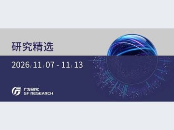

07
央媒看辽宁丨经济参考报：辽苏合作探索区域协调高质量发展新范式
今年是辽宁与江苏对口合作十周年。这场跨越长江与辽河的携手，从初期的参观互访、干部互派、零散招商，近年来向产业链共筑、创新链共建、要素链共享纵深推进。

中国人民银行11月13日发布了10月金融统计数据，一系列数据展现出金融总量合理增长，社会融资条件较为宽松，金融支持实体经济力度持续稳固。
小微企业是扩大就业、活跃市场、促进创新的重要力量，融资服务的质量直接关系经营主体活力和经济运行的微观基础。
中国人民银行11月13日发布数据显示，10月末，社会融资规模存量为469.16万亿元，同比增长7.2%；
近日，湖北省七部门联合印发《强化科技金融创新 赋能武汉区域科技创新中心建设若干措施（2026版）》（下称“湖北科技金融12条”或“新政”）…
中国人民银行11月13日下午发布的10月金融统计数据显示，10月末，人民币贷款余额283.33万亿元，同比增长4.7％。
据工业和信息化部消息，目前国家产融合作平台助企融资规模已突破1.8万亿元，平台入驻企业超过40万家。
今年是辽宁与江苏对口合作十周年。这场跨越长江与辽河的携手，从初期的参观互访、干部互派、零散招商，近年来向产业链共筑、创新链共建、要素链共享纵深推进。
会议指出，电网是新型电力系统的核心环节，对保障能源安全、促进绿色转型、支撑现代化产业体系建设具有重要作用。

西柳跨境电商TIR国际公路运输线路首发，满载货品的运输卡车在鞍山跨境电商监管场所顺利通关，启程驶向俄罗斯首都莫斯科…

为充分发挥住房公积金保障和支持职工购房作用，持续促进鞍山市房地产市场健康发展，减轻职工购房资金压力，近日，鞍山市住房公积金管理中心发布公告…

- 货币政策方面， 11月11日，央行发布2026年Q3货政报告，主要释放五方面信号：一是银行净息差仍制约降息，后续或先引导存款利率下行，再调降LPR；
核心观点：本轮赎回潮已基本结束，债市的主要矛盾从赎回风险切换为技术面和年末日历效应。就当前情况看，换锚落地后，市场已开始抢跑年末行情…
